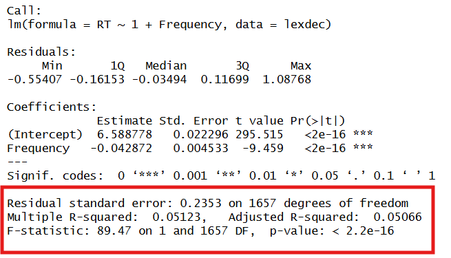
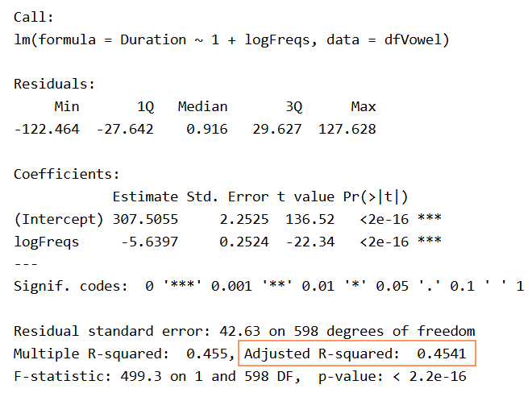
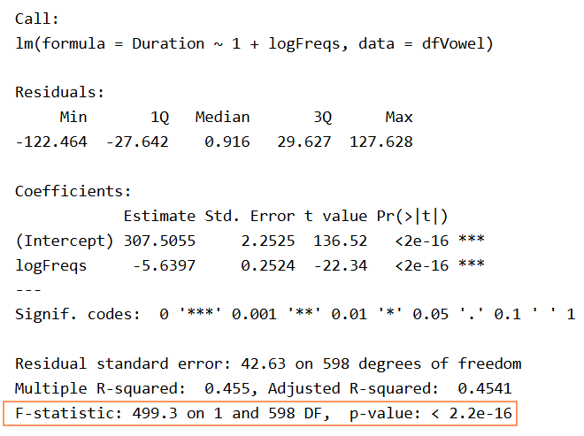
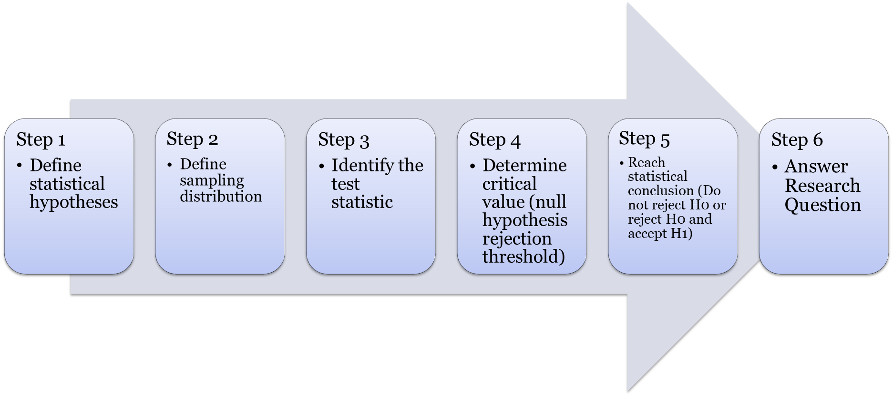

We start from were we left in workgroup #3, looking at the last section of the output generated by the lm() function, that provides the statistical assessment of the model as a whole

Let’s look at the different elements of the output
Model fit quality
We know now how to create linear models fitting the data of interest, but how do we quantify how good is that fit, and if it adequately represents the data?
\(R^2\) coefficient
As seen in the lecture, the \(R^2\) value of a model represents the level of data variance explained by the model and can be expressed as:
\(SS_T\): Total sum of squares (deviation of data points from the data mean)
\(SS_M\): Model sum of squares (deviation of regression line from the data mean)
\(SS_R\): Residual sum of squares (deviation of data points from regression line)
As an exercise let’s calculate manually the \(R^2\) value of the linear model created in Assignment #3. We load the data again and fit the model for the vowel Duration as a function of logFreqs
For \(SS_R\), the residuals from the model are available in the object returned by the lm() function:
SS_r <-sum (mod$residuals^2)SS_r
[1] 1086874
The resulting value of R2 is then:
R2 <- (SS_t - SS_r)/SS_tR2
[1] 0.455033
This is exactly the value returned in the summary(mod) output below and labelled Multiple R squared
The value indicates that the model explains 45.5% of the data variance.
Relationship with Pearson’s correlation coefficient (r)
Note that in the case of a single continuous variable, the \(R^2\) value corresponds to the square of the correlation coefficient r:
r<-cor(dfVowel$Duration,dfVowel$logFreqs)r^2
[1] 0.455033
Adjusted \(R^2\)
In the output of the model summary function there is another value labelled Adjusted R-squared

The \(R^2_{Adjusted}\) value is a correction applied to the case where more than one predictor variable is included in the model as we will see in the next lectures. It prevents the \(R^2\) value to increase with additional predictors while not improving the model fit. The adjustment is based on the number of data points (N) and the number of predictors (K):
For the cases we have seen so far with \(K=1\), the values are not too different.
Model F-statistic
The F-statistic displayed at the end of the output is from the so-called F-test for regression.

In essence, the test follows a NHST to identify if any regression slope coefficient (other than the intercept) is different from 0.
Following our general NHST process:

Step 1: Define statistical hypotheses
The null hypothesis here is that for a model, no slope coefficient is different from 0
\[
H_0: b_1=b_2=b_3=...=0 \\\\
H_a: b_k \neq 0, \text{for at least one value}
\]
In the case of single linear regression as we are looking at by now, this simplifies to
\[
H_0: b_1=0 \\\\
H_a: b_1\neq 0
\]
Step 2: Define sampling distribution: in an F-test, if \(H_0\) is true the ratio of explained and unexplained variance follow an F-distribution.
Step 3: F-test statistic can be defined as the ratio of the mean squared errors
\[
F = \frac{MS_{mod}}{MS_{res}}
\]
The mean standard error are calculated from the Sum-squared errors and the degrees of freedom. The degrees of freedom of a model is the number of predictors (K), while for the residuals, the degrees of freedom depends on the number of data points (N-K-1).
As you can see, the value is the same as in the output from model fit in the figure above.
Step 4: determine the critical value. Here the F-distribution in R can be calculated with the function qf() (similar to the function qt() that we used to determine the critical t-value in the Pearson’s coefficient significant testing). Three arguments are required: the confidence level (0.05), and the two degrees of freedom (
F_critical<-qf(1-0.05,1,600-1-1)F_critical
[1] 3.857056
Step 5: reach statistical conclusion
The calculated F-value is much higher than the threshold above, therefore, the null hypothesis is rejected and the model is better than the model with only an intercept.
Important
Note that the example above was intended for you to know where the numbers come from in the R output. You will not have to make the calculations step by step, as the lm() function already provides it in the output.